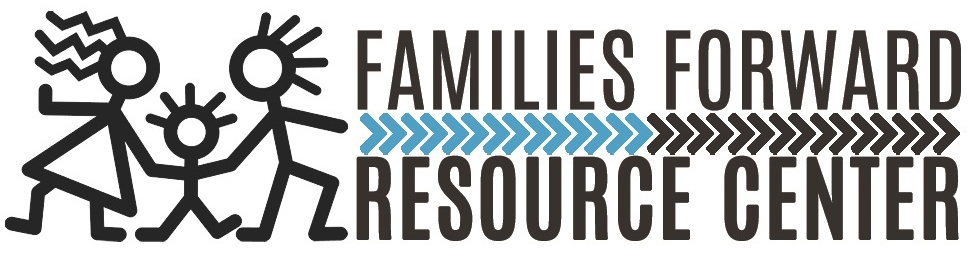

"Our mission is to enrich entire families though partnership and services that create a safe, healthy, and connected community."
Parent Education
Financial Literacy
In collaboration with Denver Community Credit Union, FFRC is offering financial literacy courses for intrigued individuals. Come learn how to better manage your finances by joining us for the following series of courses: (to sign up please e-mail latoya@familiesforwardrc.org Classes will be held at FFRC's Z Place office: 4800 Telluride St. Building 5)
CLASSES CLOSED FOR NOW
Families Forward Resource Center
Learning tools for positive parenting, whether you're a biological parent, foster parent, adoptive parent or parent through kinship, can help families stay strong.
Nurturing Parenting Program
Participating families learn about developmental milestones, discipline techniques, the importance of bonding and attachment, and many other valuable parenting skills. Classes also emphasize the value of peer support and encourage parents to remain in contact with each other after the class is concluded. FFRC teaches the 40-hour curriculum over 16 weeks in both English and Spanish, and currently runs at least two different classes each week. Food and childcare, as well as materials, are all provided to participants at no charge. Over 40 families participate in the program each year.
Couples Communication
After many years of offering couples' communication classes with FFRC staff, we now partner with Goodwill Industries to provide the class at FFRC once each month. FFRC provides a female trainer and Goodwill provides a male trainer, and Goodwill also provides materials and food for participants.
Today's Fathers Program
Fathers that participate in the program have individual family development support from a dedicated fatherhood advocate, participates in on-going classes and training using different evidence-based fatherhood curricula, and has peer support from relationships they develop with other fathers in the program.
FFRC helps fathers identify and overcome barriers to maintaining positive and active roles in their children's lives. The Today's Fathers Program teaches men to be better fathers through fatherhood training classes.
To speak with FFRC's fatherhood coordinator, Ron Allen, please visit our Montbello site ( 4725 Paris St. Suite 300 Denver, 80239) During these hours:
Monday- Thursday: 9-2pm
Friday: 9am-12pm, 3pm-5pm
Please contact Ron Allen for any questions:
Fatherhood Coordinator
RON ALLEN
720-979-5482
ron@familiesforwardrc.org
}